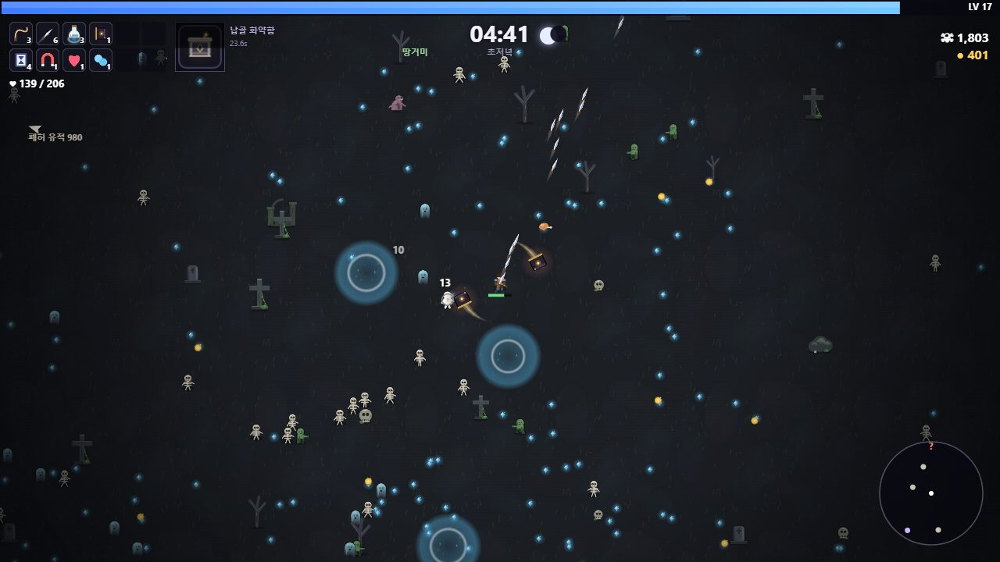
녹턴 NOCTURNE
20분의 밤을 버티는 서바이버풍 생존 액션 — 무기 진화, 달의 계약, 보스
📱 화면을 누르고 끌어 이동(공격 자동) · 가젯 버튼 · 카드를 눌러 선택⌨ WASD/방향키 이동(공격 자동) · Space 가젯 · 숫자키 선택 · Esc 일시정지
게임가로 ⟲
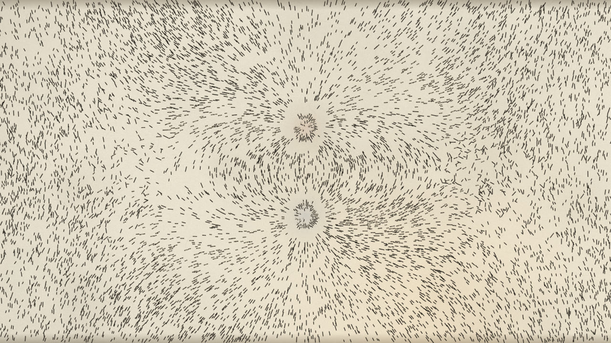
로드스톤 Lodestone
종이 위의 쇳가루. 손가락이 자석이 되고, 기울이고 두드리면 쇳가루가 움직여요
📱 손가락을 대면 자석 · 두드리기 · 기울이기⌨ 마우스를 누르면 자석 · 클릭으로 두드리기
인터랙티브
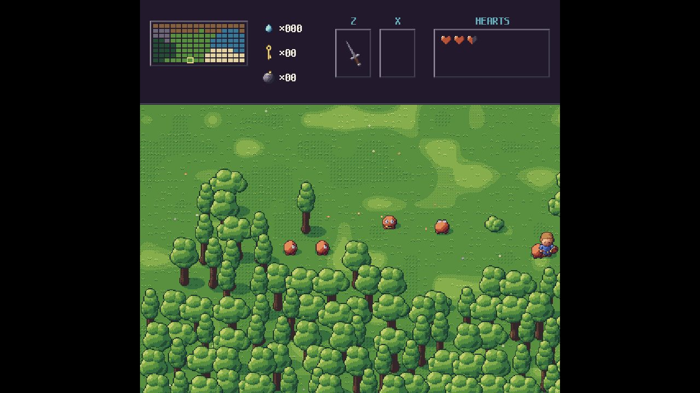
태양석의 조각 Shards of the Sunstone
여섯 조각을 모아 봉인을 깨는 16비트풍 오리지널 액션 어드벤처 RPG
📱 왼쪽 스틱 이동 · A 칼/들기 · B 아이템 · MENU 인벤토리 · 화면 탭으로 대화 넘기기⌨ 방향키 이동 · Z 칼 · X 아이템 · Enter 시작/일시정지 · S 저장
게임
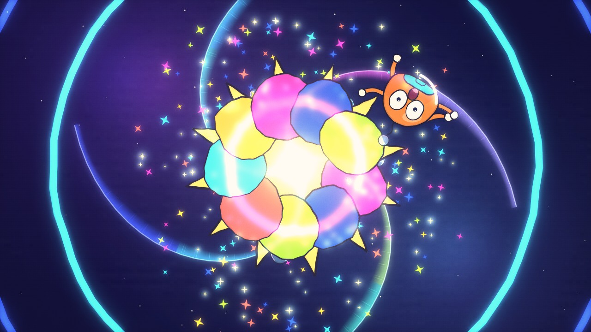
은하 세탁소 Galaxy Laundromat
세제를 너무 넣은 견습 세탁부와 성운 빨래 대소동. 코드로 그린 57초 뮤직비디오
📱 탭해서 재생·일시정지 · 막대를 끌어 이동 · 가로로 돌리면 크게⌨ 클릭/Space 재생 · ←/→ 이동 · F 전체화면
영상
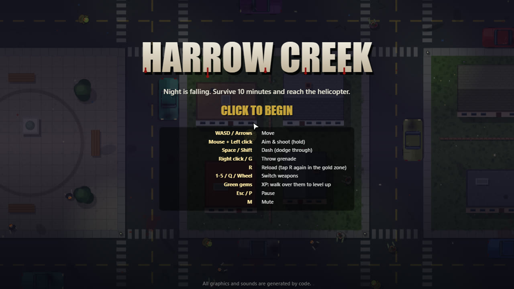
해로 크릭 Harrow Creek
좀비로 가득한 밤의 마을에서 10분을 버티고 헬기까지 가는 생존 게임
📱 왼쪽 스틱 이동 · 오른쪽 스틱 조준·사격 · 대시·수류탄 버튼⌨ WASD 이동 · 마우스 조준·클릭 사격
게임가로 ⟲
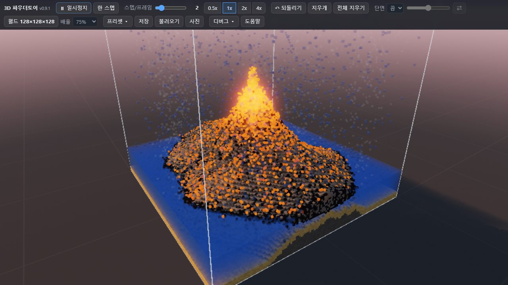
3D 파우더토이 3D Powder Toy
모래·물·불·화약 43종 물질이 흐르고 타고 터지는 3D 물리 샌드박스
📱 한 손가락 뿌리기 · 두 손가락 회전·핀치 확대 · 아래 막대에서 물질 선택⌨ 좌클릭 뿌리기 · 우클릭 드래그 회전 · 휠 확대 · Space 재생
인터랙티브WebGPU
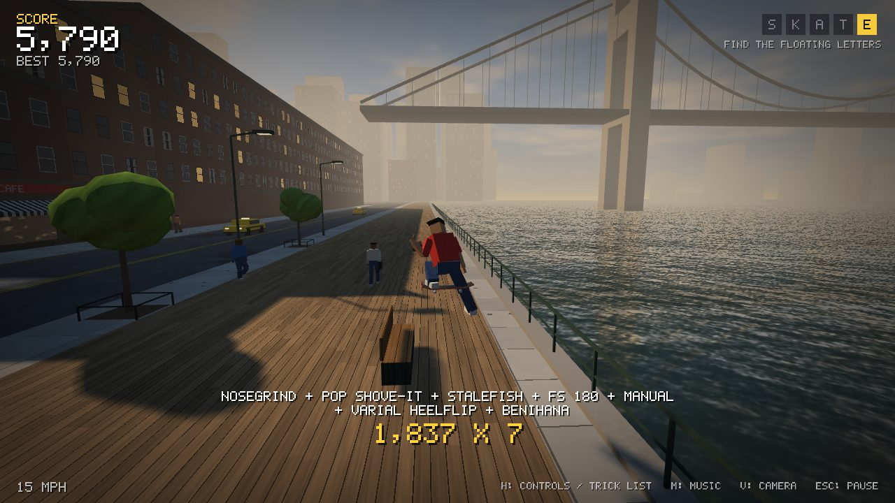
콘크리트 정글 OpusSkate
2000년대 뉴욕 한 블록에서 타는 3D 스트리트 스케이트보드 (C++ 원작의 웹판)
📱 왼쪽 스틱 밀기·방향 · OLLIE(누르고 떼기)·FLIP·GRAB·GRIND 버튼 + 스틱 방향으로 트릭⌨ W/S 밀기 · A/D 방향 · Space 올리 · J/K/L/I 트릭 · B 오토파일럿
게임가로 ⟲
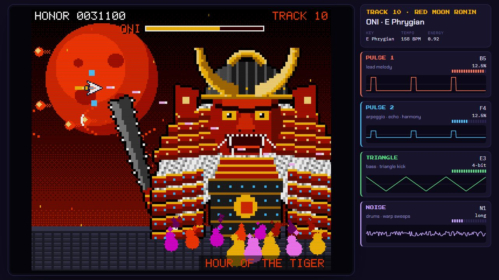
코멧 캐러밴 Comet Caravan
NES 음원 칩으로 연주하는 칩튠 — 시드로 만드는 20분 원정과 작곡 12곡, 곡마다 픽셀 스테이지
📱 ▶ START로 재생 · 곡 카드 탭으로 선택 · 루트 맵을 끌어서 이동⌨ Space 재생/정지 · ←→ 10초 이동 · 1–4 채널 뮤트 · 곡 카드 클릭
음악
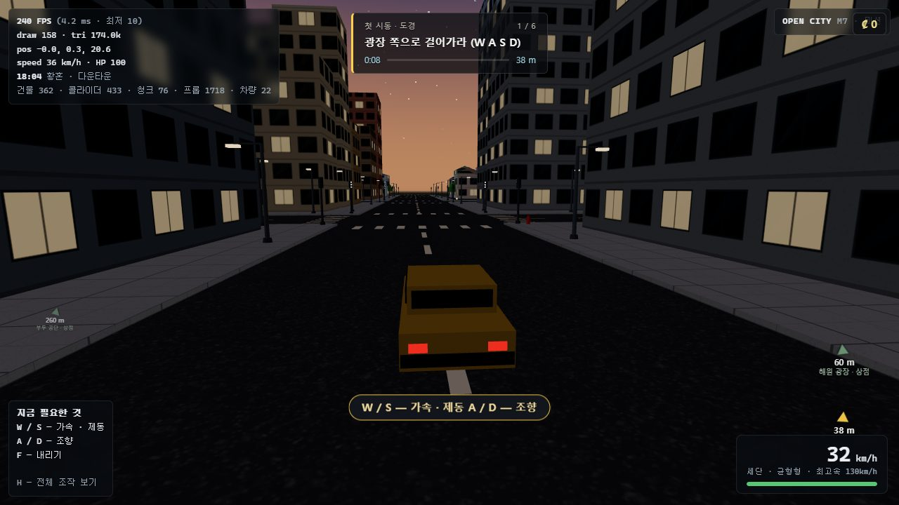
오픈 시티 OPEN CITY
걷고 차를 몰며 미션을 하는 3D 오픈월드 도시
📱 도보: 스틱·드래그 시점·점프·탑승 · 운전: 조향·가속·브레이크 버튼⌨ 클릭해 시작 · WASD 이동/운전 · 마우스 카메라 · F 탑승/하차
게임가로 ⟲
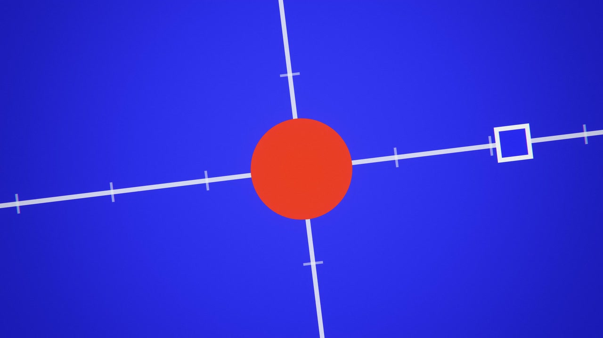
FULL STOP 10분 모션 디자인 필름
주황 점 하나가 점·선·면·입체를 지나 마침표가 되는 10분 필름과 짧은 쇼릴
📱 가운데 재생 버튼 · 장 버튼으로 바로 이동⌨ 클릭해서 재생 · 장 버튼으로 이동
영상
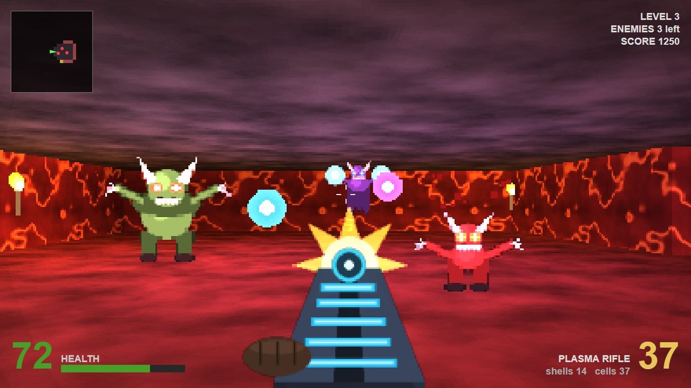
크림슨 뎁스 Crimson Depths
텍스처·소리·던전 모두 코드로 생성되는 레이캐스팅 FPS (파이썬 원작의 웹판)
📱 왼쪽 스틱 이동 · 오른쪽 드래그 시점 · FIRE·WEAPON·SPRINT 버튼⌨ 클릭해 마우스 고정 · WASD · 마우스 시점 · 좌클릭 발사 · 1-3 무기
게임가로 ⟲
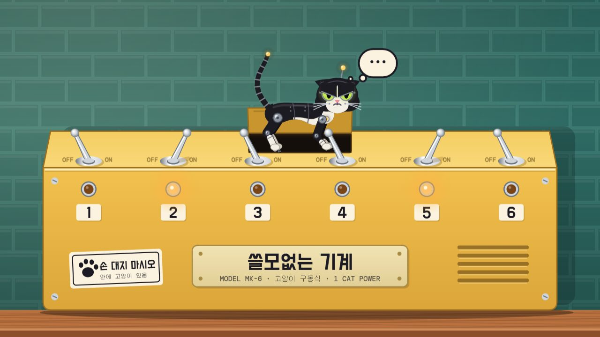
쓸모없는 기계 Useless Machine
스위치를 켜면 상자 속 턱시도 로봇 고양이가 나와서 도로 끄는 장난감
📱 스위치를 탭해서 켜기 · 나온 고양이를 탭하면 쓰다듬기⌨ 스위치 클릭 또는 숫자 키 1–6 · 고양이 클릭
인터랙티브
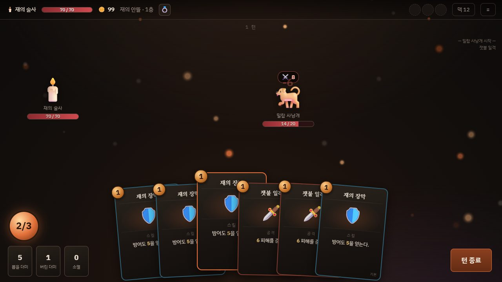
신더홀 CINDERHALL
잿불 성당을 오르는 덱빌딩 로그라이크 — 카드 169장, 유물 84개
📱 카드 탭=크게 보기, 한 번 더 탭=사용 · 적 탭=대상/정보 · 길게 누르면 설명⌨ 카드 클릭=사용 · 적 클릭=대상 · 1~9 카드 · E 턴 종료
게임
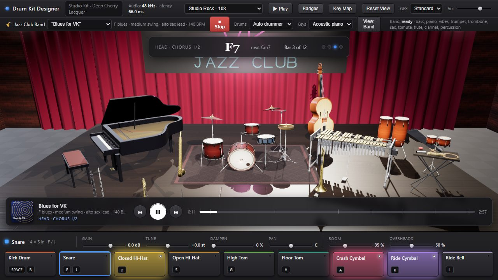
가상 드럼킷 & 재즈 클럽 밴드 Virtual Drum Kit
3D 드럼킷을 직접 치며 재즈 클럽 밴드와 12곡을 합주하는 실제 샘플 악기
📱 패드나 화면 속 드럼을 터치(여러 손가락 동시) · 드래그 회전 · ⋯ More⌨ 키보드(Space 킥·F/J 스네어·D/S 하이햇…)나 클릭으로 연주 · Play Jazz
음악
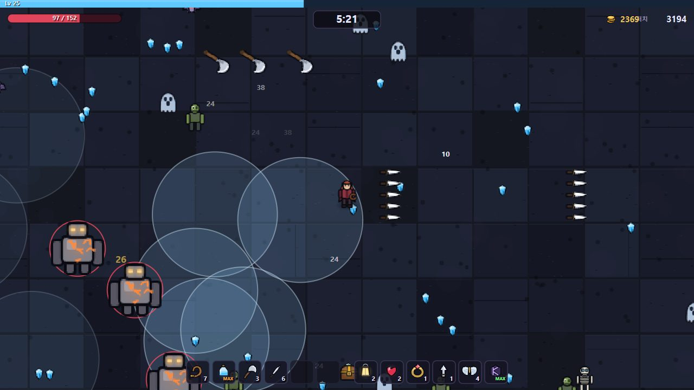
나이트 호드 NIGHT HORDE
30분을 버티는 서바이버풍 자동 공격 생존 액션
📱 화면 아무 데나 누르고 밀어 이동(공격 자동) · 레벨업 카드 탭 · Ⅱ 일시정지⌨ WASD/방향키 이동 · 1~4 레벨업 선택 · Esc 일시정지
게임가로 ⟲
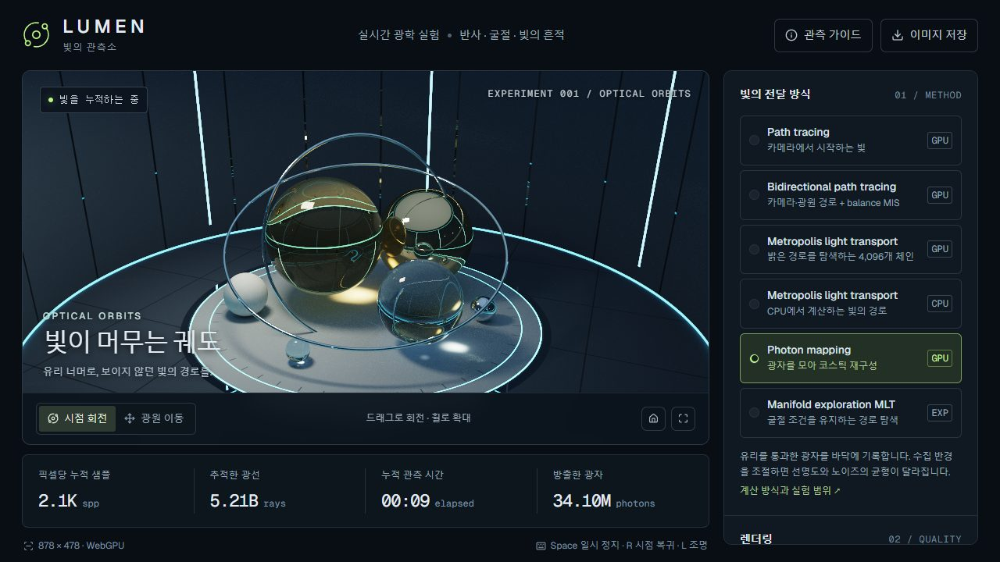
LUMEN · 빛의 관측소 Lumen Observatory
유리를 지나는 빛을 여섯 가지 렌더링 방식으로 추적하는 WebGPU 광학 실험실
📱 한 손가락 드래그로 시점 회전 · 두 손가락으로 확대 · 버튼으로 모드 전환⌨ 드래그 회전 · 휠 확대 · Space 일시정지 · L 조명 도구
인터랙티브WebGPU
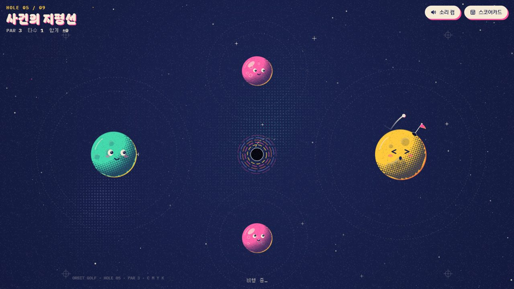
궤도 골프 Orbit Golf
행성 중력으로 공을 휘게 해서 컵에 넣는 9홀 우주 골프
📱 화면을 뒤로 끌었다 놓으면 새총처럼 샷⌨ 마우스로 끌었다 놓아 샷 · 방향키로 조준, Space 샷
게임
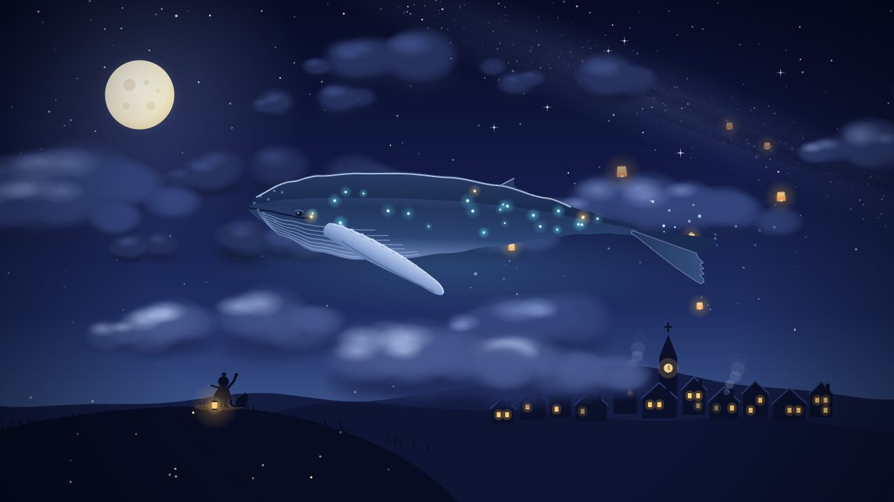
고래가 지나간 밤 The Night the Whale Passed
달빛 구름 사이로 혹등고래가 잠든 언덕 마을 위를 헤엄쳐 가는 밤 풍경
📱 탭하면 전체 보기 ↔ 화면 채우기 · 가로로 들면 더 크게⌨ 클릭 또는 Space로 채우기 전환 · F 전체 화면
아트
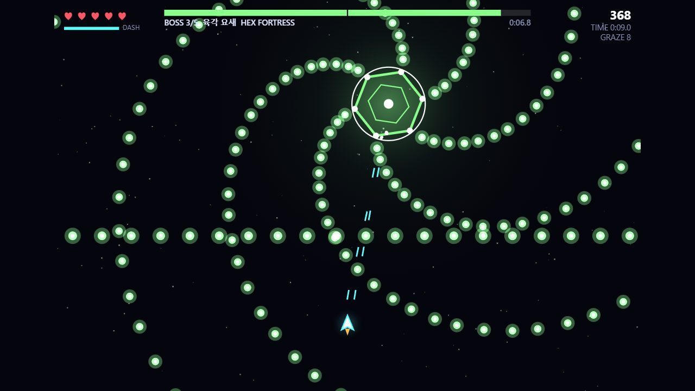
노바 러시 NOVA RUSH
다섯 보스의 탄막을 피하며 자동 사격으로 격파하는 10분 보스 러시
📱 화면 아무 데나 끌어 이동 · DASH · FOCUS 저속 · 사격은 자동⌨ WASD/방향키 이동 · Space 대시 · Shift 저속 · P 일시정지
게임가로 ⟲
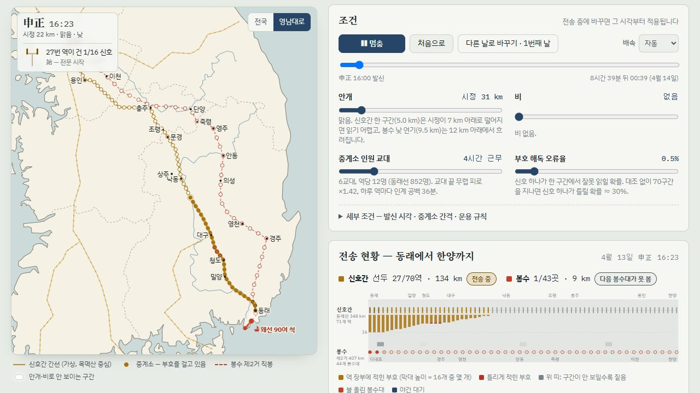
조선 신호간 통신망 Joseon Semaphore Network
1592년 조선에 신호간 통신망이 있었다면? 동래→한양 급보를 봉수와 겨뤄 보는 시뮬레이션
📱 ▶ 급보 발신 탭 · 슬라이더를 가로로 끌기 · 노선 단면을 탭하면 역 정보⌨ ▶ 급보 발신 클릭 · 슬라이더·배속 조절 · 노선 단면에 마우스를 올리면 역 정보
인터랙티브
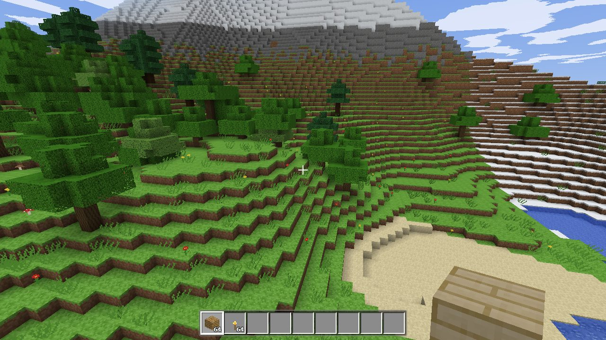
복셀크래프트 VoxelCraft
바이옴·동굴·몹·제작이 있는 브라우저 마인크래프트풍 샌드박스
📱 왼쪽 스틱 이동 · 드래그 시점 · 탭 설치, 꾹 눌러 채굴 · JUMP·BAG 버튼⌨ WASD 이동 · 마우스 시점 · 좌클릭 채굴 · 우클릭 설치 · E 인벤토리
게임가로 ⟲
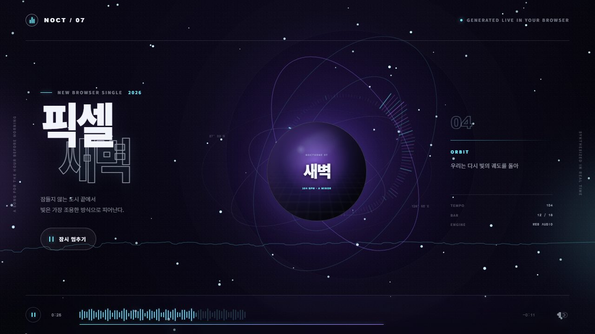
픽셀 새벽 Pixel Dawn
Web Audio로 실시간 합성되는 104 BPM 신스웨이브 싱글과 반응형 비주얼
📱 첫 화면을 탭해 재생 · 재생/일시정지·음소거 버튼⌨ 클릭해서 재생 · 재생/일시정지·음소거 버튼
음악
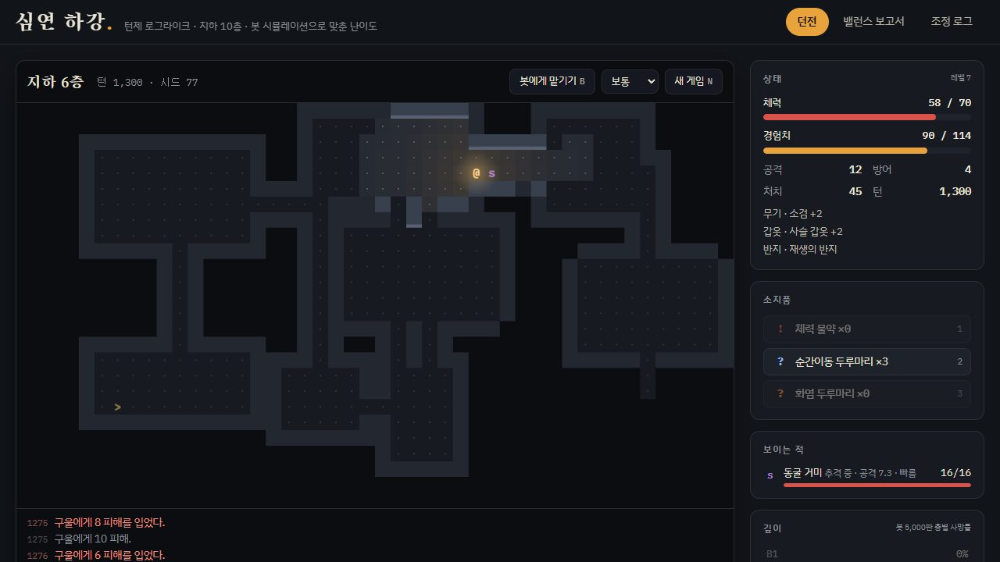
심연 하강 Abyss Descent
지하 10층을 내려가는 턴제 로그라이크 — 봇 수천 판으로 맞춘 난이도
📱 지도를 탭하면 한 칸(누르고 있으면 계속 걷기) · 방향 패드 · 아이템·휴식·내려가기 버튼⌨ 방향키/WASD 이동·공격 · 1 2 3 아이템 · R 휴식 · Enter 내려가기
게임
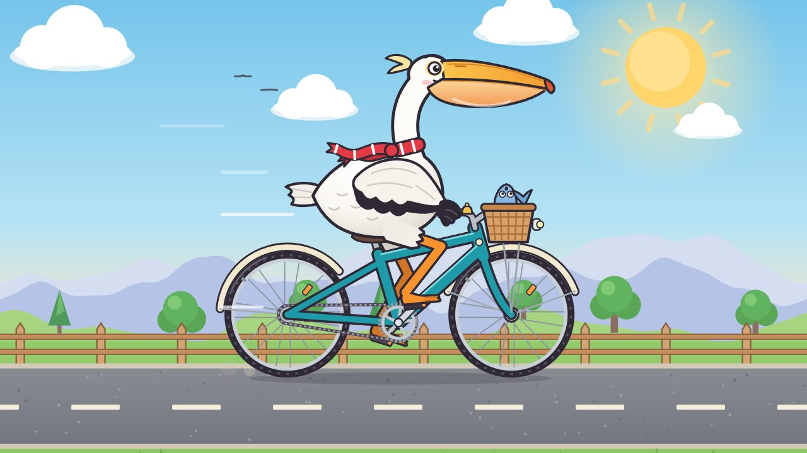
시골길 펠리컨 Pelican Ride
빨간 목도리 펠리컨이 물고기를 싣고 시골길을 달리는 SVG 애니메이션
📱 탭하면 전체 보기 ↔ 화면 채우기 · 가로로 들면 더 크게⌨ 클릭 또는 Space로 채우기 전환 · F 전체 화면
아트
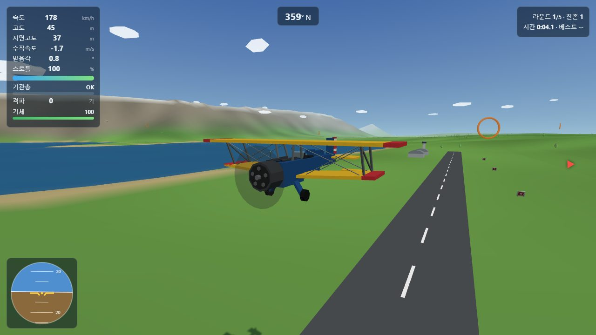
저폴리 비행 시뮬레이터 Low-Poly Flight Sim
복엽기로 링 코스를 돌고 공습 라운드를 버티며 업그레이드하는 비행 게임
📱 왼쪽 스틱 피치·롤 · 오른쪽 스로틀 슬라이더 · 발사·러더 버튼 · ☰ 메뉴⌨ W/S 피치 · A/D 롤 · Q/E 러더 · X/Z 스로틀 · Space 발사
게임가로 ⟲
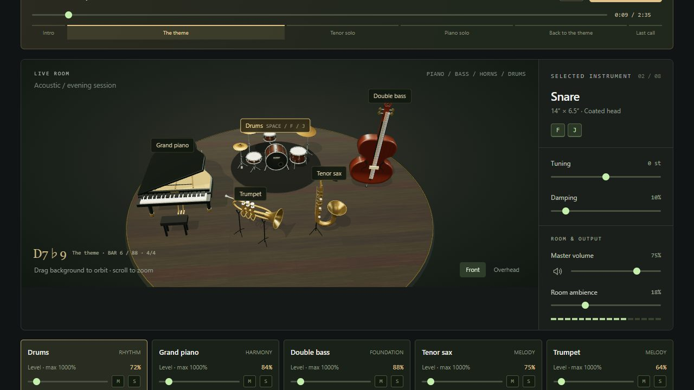
백비트 — 재즈 룸 Backbeat
오리지널 재즈 8곡을 5인조 3D 밴드와 연주하고 믹싱하는 재즈 룸
📱 드럼·건반 패드를 여러 손가락으로 연주 · 무대 속 악기 터치 · 드래그 회전⌨ 드럼 키와 멜로디 키(Z~M)로 연주 · 드래그 회전 · K 키맵
음악
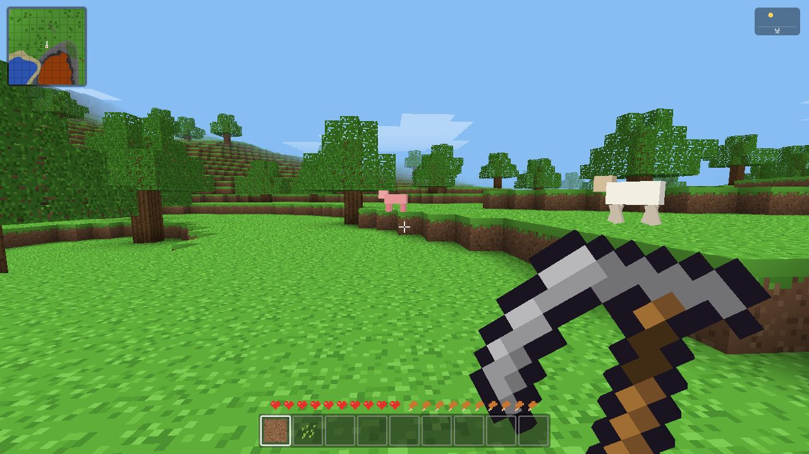
복셀 서바이벌 Voxel Survival
무한 절차 생성 월드에서 채집·제작·생존하는 마인크래프트풍 게임
📱 왼쪽 스틱 이동 · 드래그 시점 · 탭 설치, 꾹 눌러 캐기 · 점프·가방 버튼⌨ WASD 이동 · 마우스 시점 · 좌클릭 캐기 · 우클릭 설치 · E 인벤토리
게임가로 ⟲
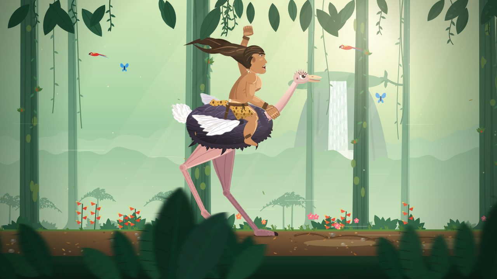
정글 라이더 Jungle Rider
타조를 타고 정글을 질주하는 야생 사나이, 앵무새와 폭포가 스쳐 가는 SVG 애니메이션
📱 탭하면 전체 보기 ↔ 화면 채우기 · 가로로 들면 더 크게⌨ 클릭 또는 Space로 채우기 전환 · F 전체 화면
아트
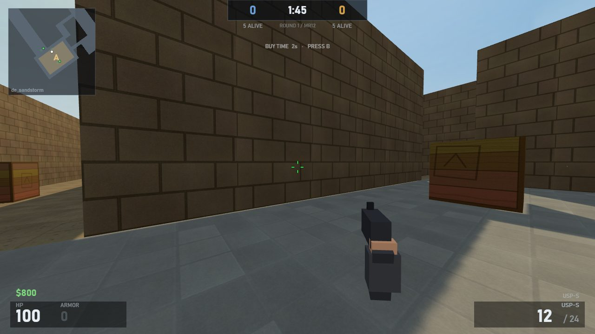
카운터 오펜시브 Counter-Offensive
봇 9명과 5대5 폭탄 설치·해체전을 벌이는 전술 FPS
📱 왼쪽 스틱 이동 · 드래그 조준 · FIRE·SCOPE·RELOAD·USE 버튼 · BUY 상점⌨ WASD · 마우스 조준·좌클릭 사격 · R 장전 · 1-5 무기 · B 상점
게임가로 ⟲
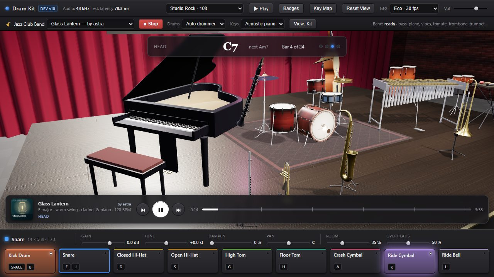
가상 드럼 & 재즈 밴드 v10 Virtual Drum & Jazz Band
드럼을 치며 17곡 재즈 밴드와 합주하는 Codex 개선판
📱 패드나 화면 속 드럼을 터치(여러 손가락 동시) · 드래그 회전 · ⋯ More⌨ 키보드나 클릭으로 연주 · 드래그 회전 · Play Jazz
음악
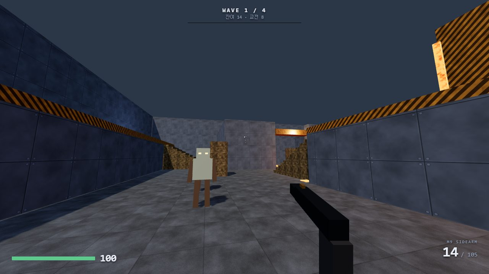
호드폴 HORDEFALL
몰려오는 ZED 무리를 웨이브마다 버티는 1인칭 호드 슈터
📱 왼쪽 스틱 이동 · 오른쪽 드래그 시점 · 사격·점프·장전·무기 버튼⌨ 클릭해 시작 · WASD · 마우스 시점 · 좌클릭 사격 · R 장전
게임가로 ⟲
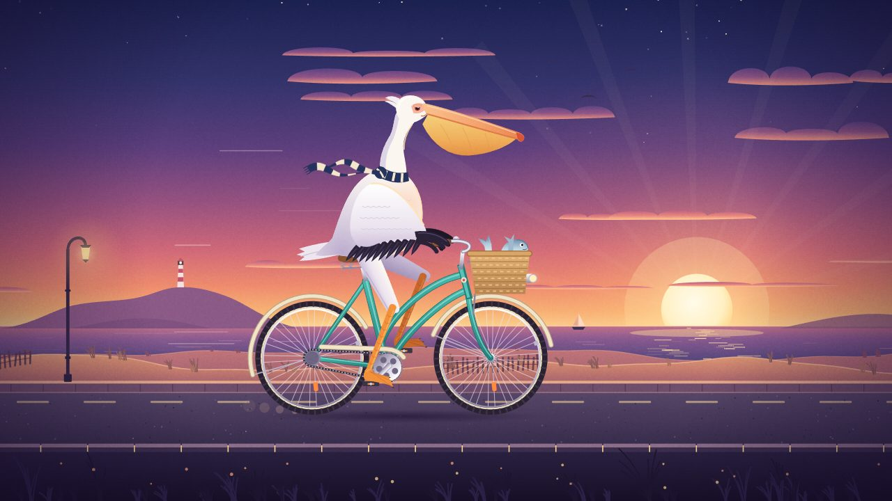
노을 해변의 펠리컨 Pelican on a Bicycle
노을 지는 바닷가 산책로를 자전거로 달리는 펠리컨 SVG 애니메이션
📱 탭하면 전체 보기 ↔ 화면 채우기 · 가로로 들면 더 크게⌨ 클릭 또는 Space로 채우기 전환 · F 전체 화면
아트
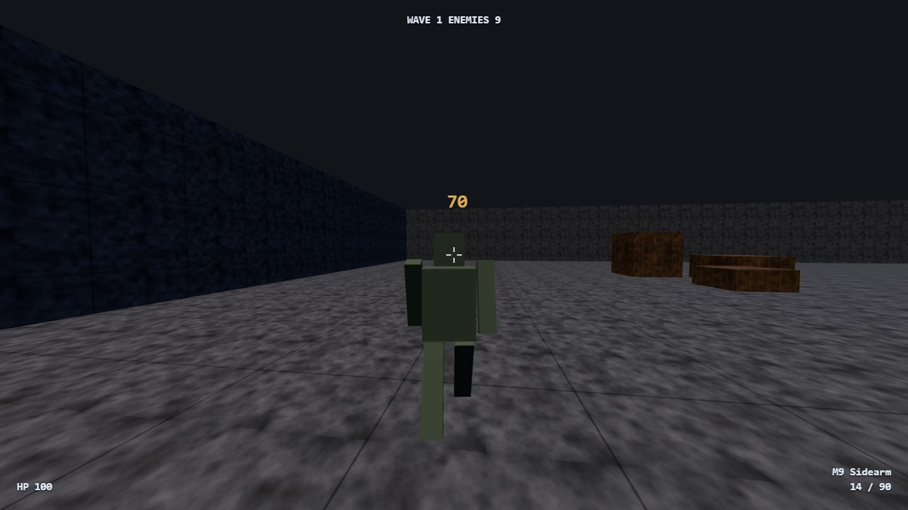
호드 슈터 Horde Shooter
탄약을 아끼며 카이팅으로 웨이브를 버티는 1인칭 호드 슈터
📱 왼쪽 스틱 이동 · 오른쪽 드래그 시점 · FIRE·AIM·JUMP·RELOAD 버튼⌨ 클릭해 시작 · WASD · 마우스 시점 · 좌클릭 사격 · 우클릭 조준
게임가로 ⟲
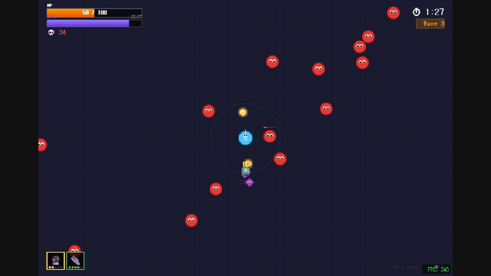
서바이버스 던 Survivor's Dawn
자동 공격 무기로 몰려오는 적 무리를 버티며 레벨업하는 서바이버 게임
📱 화면 아무 곳이나 끌어 이동(공격 자동) · 카드 탭으로 강화 · ❚❚ 일시정지⌨ WASD/방향키 이동 · 1/2/3 강화 선택 · ESC 일시정지
게임
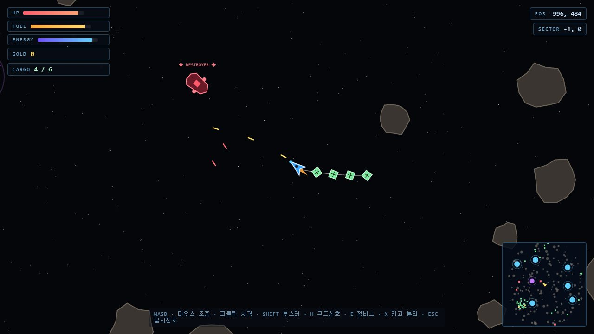
스페이스 카고 러너 Space Cargo Runner
소행성대에서 적을 격추하고 카고를 끌고 가 상선에 파는 우주 슈팅
📱 왼쪽 스틱 이동 · 오른쪽 스틱 조준(끝까지 밀면 사격) · BOOST·DOCK 버튼⌨ WASD 이동 · 마우스 조준 · 좌클릭 사격 · SHIFT 부스터 · E 정비소
게임가로 ⟲
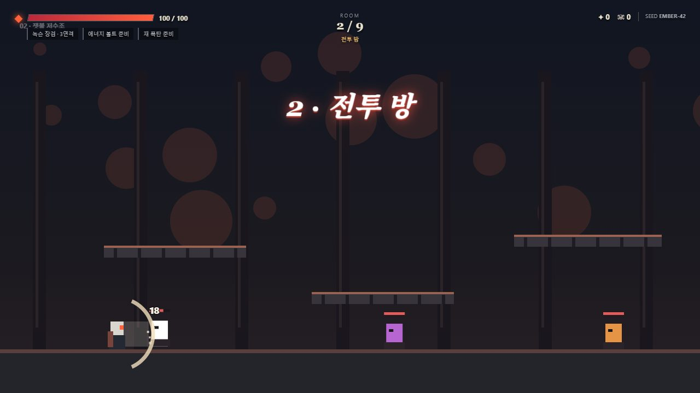
애시바운드 Ashbound
재가 된 성채를 검·볼트·폭탄으로 돌파하는 시드 기반 횡스크롤 로그라이트
📱 왼쪽 스틱 이동 · 점프·검·볼트·구르기·폭탄 버튼 · ❚❚ 일시정지⌨ A/D 이동 · W/Space 점프 · J 검 · K 볼트 · L 구르기 · Q 폭탄
게임가로 ⟲
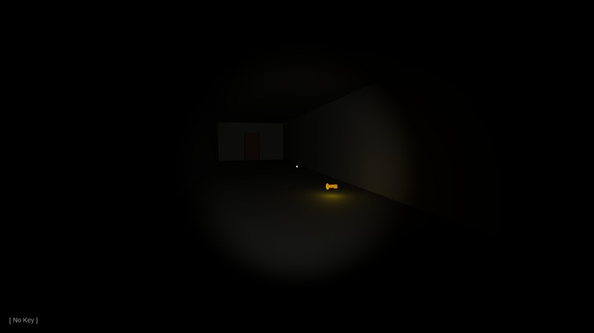
호러 FPS Horror FPS
손전등 하나로 어두운 복도에서 열쇠를 찾아 탈출하는 1인칭 호러 (프로토타입)
📱 왼쪽 스틱 이동 · 드래그 시점 · LIGHT 손전등 · USE 열쇠/문⌨ 클릭해 시작 · WASD · 마우스 시점 · F 손전등 · E 상호작용
게임가로 ⟲
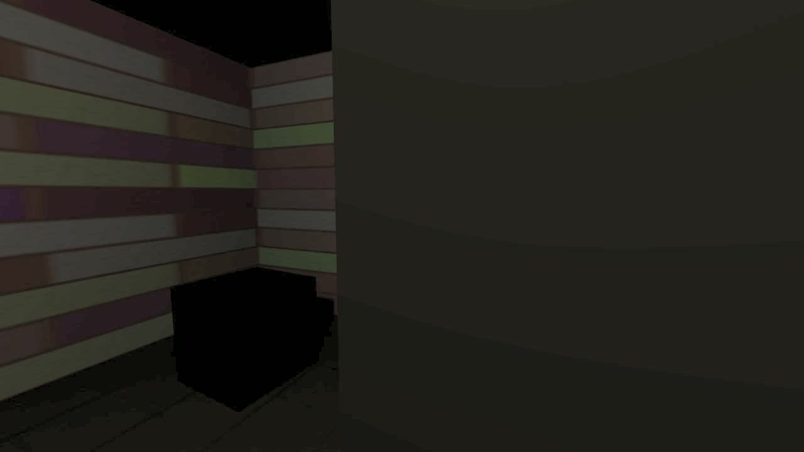
호러 게임 Horror Game
어두운 건물을 돌아다니며 문을 여는 1인칭 호러 (프로토타입)
📱 왼쪽 스틱 이동 · 드래그 시점 · USE 문 열기 · RUN · MAP⌨ 클릭해 시작 · WASD · 마우스 시점 · E 문 · M 지도
게임가로 ⟲
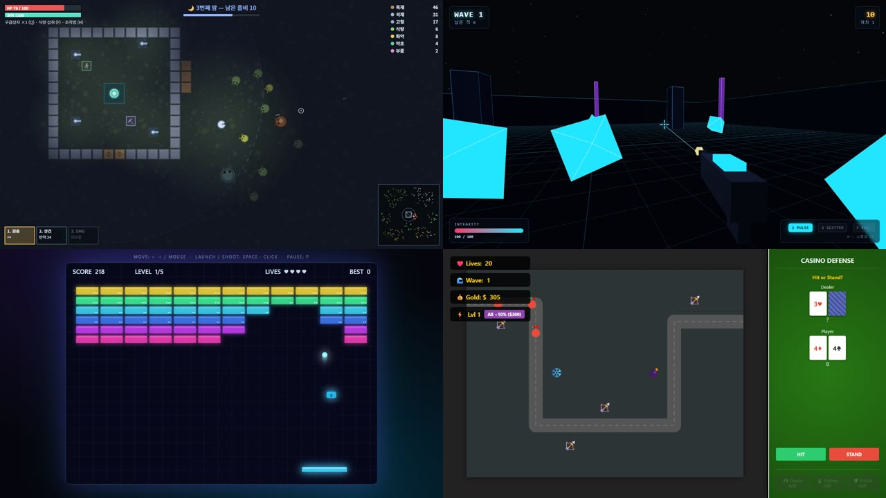
미니 게임 13종 Mini Games
한 파일짜리 게임 모음 — 좀비 기지 방어, FPS, 복셀, 타워 디펜스, 벽돌깨기, 배구, 카드 게임까지
모음14개
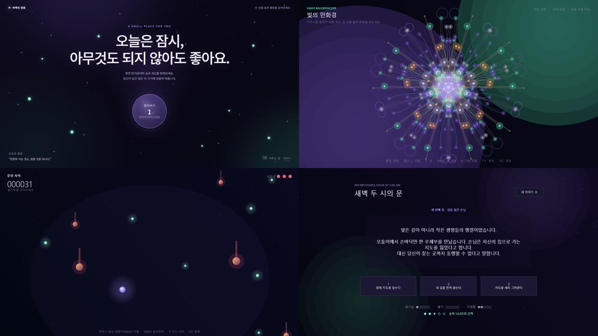
작은 정원 ChatGPT Playground
ChatGPT와 함께 만든 정원 연작 — 별빛을 심는 정원, 만화경, 유성 게임, 행성 라디오, 새벽의 단편소설, 오디오 엽서와 기록들
모음9개
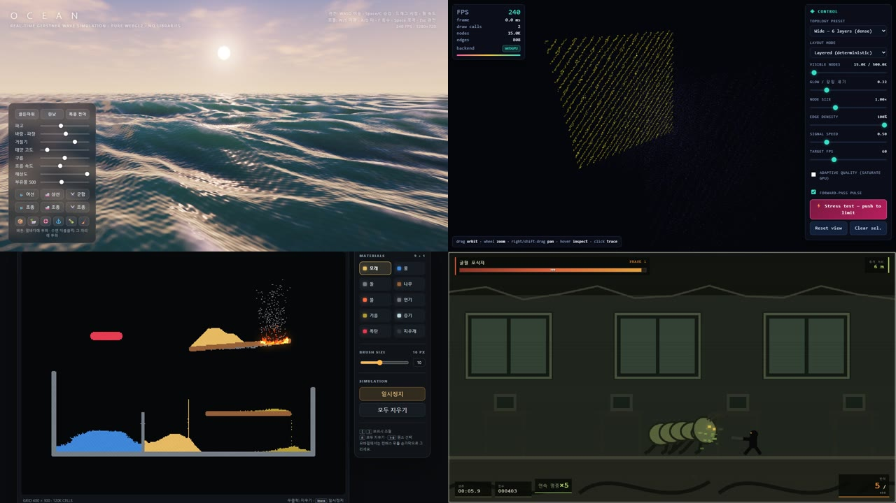
작은 작업들 Small Projects
한두 파일로 만든 짧은 실험들 — 바다 시뮬레이션, 신경망, 폴링 샌드, 스네이크 등
모음9개
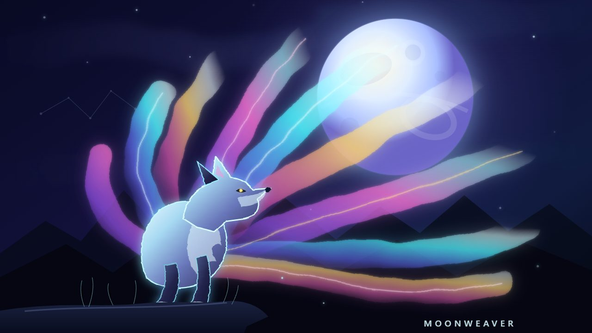
SVG 아트 두 점 SVG Art
SVG 필터로 그린 움직이는 그림 — 아홉 꼬리 여우와 심해 해파리
모음2개